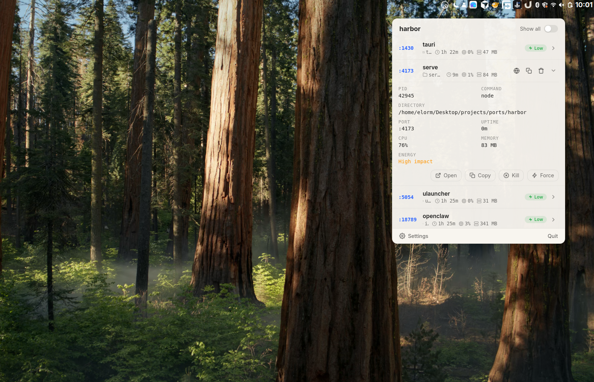

harbor
See every dev server running on localhost from your system tray.
Verify downloadDownloads go live when v0.1.0 is released.

Features
- Tray port list All listening localhost servers in one popup from your system tray.
- Process stats CPU, memory, uptime, and energy impact at a glance.
- Open in browser Jump to any localhost URL without hunting for the port.
- Kill with confirmation Stop dev servers safely — terminate or force-kill when you need to.
- System protection System services stay locked — no accidental kills on ulauncher or shell apps.
- Light & dark themes Follow system appearance or pick light, dark, or auto.